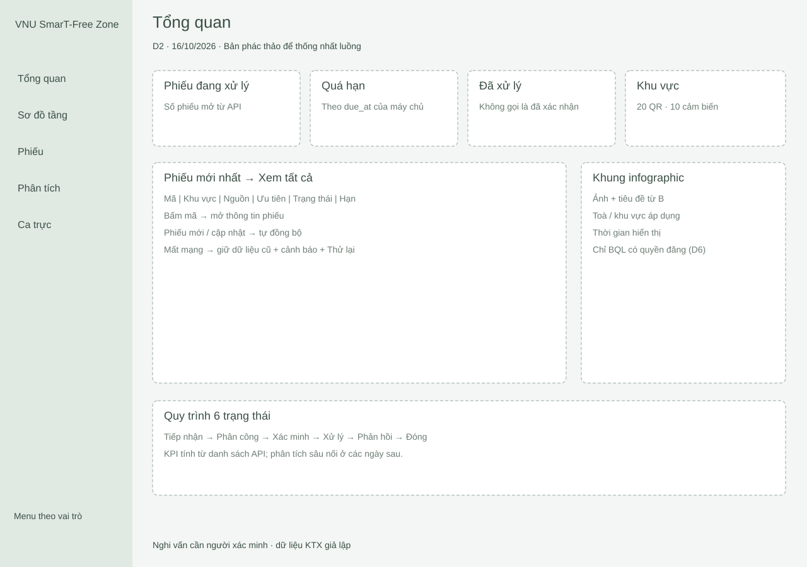
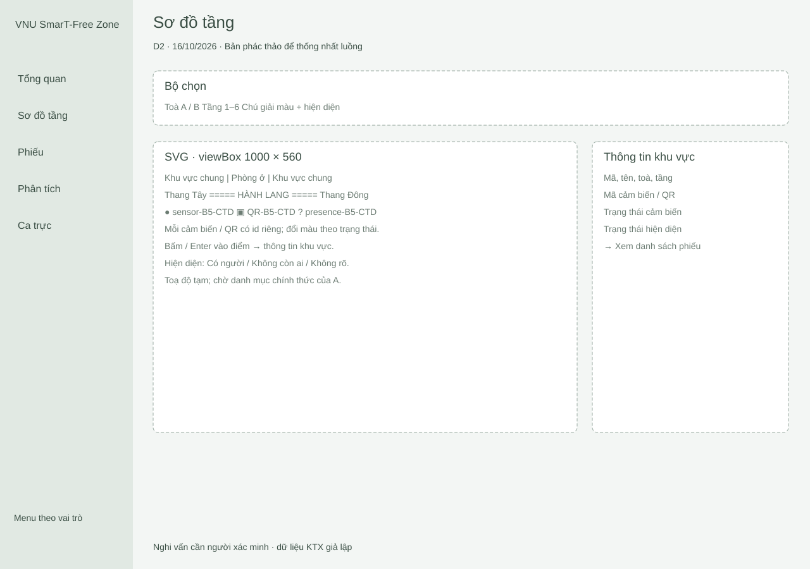
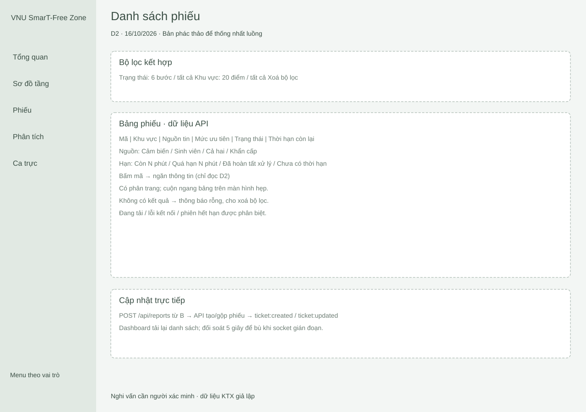
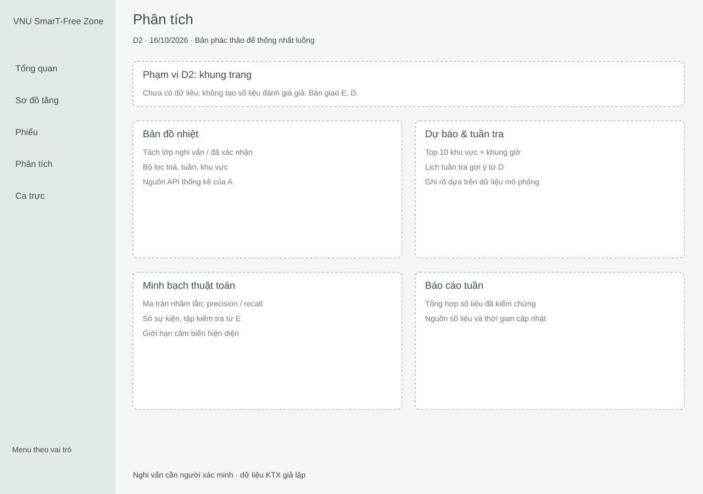
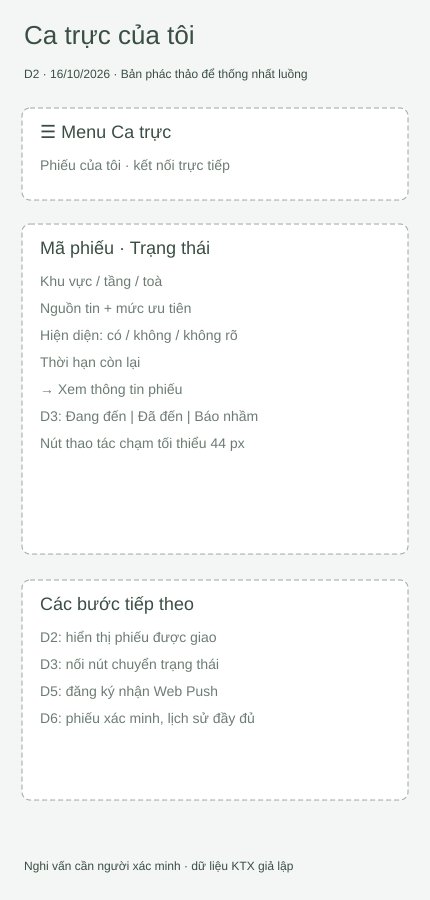

Wireframe dashboard · C · 16/10/2026
5 trang để cả đội duyệt bố cục. Toạ độ sơ đồ tầng là đề xuất, chờ A xác nhận.
Tổng quan
Mở SVG

Sơ đồ tầng
Mở SVG

Danh sách phiếu
Mở SVG

Phân tích
Mở SVG

Ca trực của tôi
Mở SVG

Sơ đồ 12 tầng
Toà A, tầng 1 · Toà A, tầng 2 · Toà A, tầng 3 · Toà A, tầng 4 · Toà A, tầng 5 · Toà A, tầng 6
Toà B, tầng 1 · Toà B, tầng 2 · Toà B, tầng 3 · Toà B, tầng 4 · Toà B, tầng 5 · Toà B, tầng 6Danh mục 20 khu vực và toạ độ tạm